Results of Population Analysis
1. Means of Analysis
1.1. Significance of Catchment Population Distribution (Walking) Analysis
As Singapore moves towards SG Green Plan 2030, one of their goals is to achieve 75% mass public transport (i.e. rail and bus) peak-period modal share. By expanding current MRT station network, they hope to make public transportation more accessible for Singaporeans to encourage more Singaporeans to take them. Furthermore, we will explore how effective the catchment areas of the upcoming Thomson-East Coast station are based on the current road network present i encouraging Singaporeans to cycle. With this goal in mind, we will conduct Population Distribution Analysis for Walking Catchment Areas. It will consist of the following:
Proportion of population captured within a subzone
Proportion of subzone population who is willing to walk to TEL Stage 4 MRT Stations.
Firstly, our purpose of analysis is to explore explore how effective are the walking catchment areas in capturing subzone population for each TEL Stage 4 MRT Stations based on the current road network present.
Additionally, it is important to analyze the proportion of Singaporeans who is wiling to walk at each contour distance to evaluate the location chosen for the TEL Stage 4 MRT Stations.
Assumptions made are:
Population is evenly distributed throughout the entire subzone
Results from the study still hold true for all Singaporeans
We have also defined the variables that we will be using in our calculations later and its formula (if any) based on the table as shown below.
| Variables | Definition | Formula (if any) |
|---|---|---|
| Subzone Name | Name of Subzone | -Nil- |
| Catchment Area | Area of Subzone in the Catchment Zone | $area from QGIS |
| Subzone Area | Area of Subzone | $area from QGIS |
| Ratio | Calculated Ratio of Catchment Area to Subzone Area | Catchment Area/Subzone Area |
| Subzone Population | Raw Subzone Population Numbers | Subzone Population |
| Catchment Population | Calculated Catchment Population Numbers | Ratio * Total Subzone Population |
| Population (Willing to Walk to MRT) | Calculated Catchment Population who is willing to walk to MRT | 200m: Catchment Population (0-200m) * 1 400m: Catchment Population (200-400m) * 0.8 600m: Catchment Population (400-600m) * 0.5 800m: Catchment Population (600-800m) * 0.3 1000m: Catchment Population (800-1000m) * 0.15 |
| Percentage Population | Calculated Percentage of Catchment Population who is willing to walk to MRT Station at Subzone Levels within the Catchment Areas | Population (Willing to Walk to MRT) within Contour / Total Catchment Population * 100 |
1.2. Significance of Catchment Population Distribution (cycling) Analysis
With this goal in mind, we will conduct Population Distribution Analysis for Cycling Catchment Areas. It will consist of the following:
Proportion of population captured within a subzone
Accessibility of TEL Stage 4 MRT Stations
Firstly, our purpose of analysis is to explore how effective are the cycling catchment areas in capturing subzone population for each TEL Stage 4 MRT Stations based on the current road network present.
However, based on URA,it is stated that only 3.9% of Singaporeans take a combination of transportation. For example, one combination would be cycling and taking the bus. Therefore, the proportion of Singapore who cycles and takes the MRT is far lesser than the 3.9% stated. Due to low and insignificant numbers, a more suitable analysis to evaluate its location suitability would be from the various subzones that fall within 1.6km radius instead of the number of people who is willing to cycle within the catchment area.
The Singapore Government only built 800 bicycle racks within the 1.5km radius of each MRT Station. However, since our interval between each contour is 200m for contour generation in our QGIS, the max contour will be at 1.6km instead. We will also eliminate subzones from the list of accessibility if the proportion of the subzone that is in the catchment area is below 5% as it renders the subzone insignificant in the catchment area.
Assumption made is:
- Population is evenly distributed throughout the entire subzone
We have also defined the variables that we will be using in our calculations later and its formula (if any) based on the table as shown below.
| Variables | Definition | Formula (if any) |
|---|---|---|
| Subzone Name | Name of Subzone | -Nil- |
| Catchment Area | Area of Subzone in the Catchment Zone | $area from QGIS |
| Subzone Area | Area of Subzone | $area from QGIS |
| Ratio | Calculated Ratio of Catchment Area to Subzone Area | Catchment Area/Subzone Area |
| Subzone Population | Raw Subzone Population Numbers | -Nil- |
| Catchment Population | Calculated Catchment Population Numbers | Ratio * Total Subzone Population |
2. Amenities Analysis for Stations
2.1. TE22A Founders Memorial
2.1.1. Catchment Population Distribution (Walking)
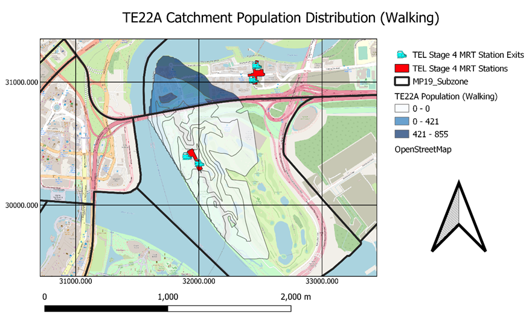
Based on the Walking Catchment Population Distribution for TE22A Founders Memorial, we can see that these following subzones (Marina East and Tanjong Rhu) are captured at the 1000m mark. However, we can see that the largest proportion of catchment population falls within Tanjong Rhu. This is shown by the blue contour layers.
We further broke down the population distribution per contour and subzone level below to visualize these numbers more clearly. Additionally, we will be multiplying these numbers at every contour level by a ratio (as mentioned earlier) to accurately reflect how many people who are willing to walk to TE22A Founders Memorial (shown below).
Based on the numbers generated, the following breakdown are the Singaporeans who are willing to walk to TE22A Founders Memorial based on each contour interval:
0 Singaporeans within 200m contour
0 Singaporeans within 200-400m contour
19 Singaporeans within 400-600m contour
115 Singaporeans within 600-800m contour
65 Singaporeans within 800-1000m contour
855 Singaporeans stay within the 1000m contour but only 199 of them are willing to walk to TE22A Founders Memorial. The percentage of catchment population who is willing to walk to MRT Station over catchment population is 23.3%. This percentage does not reflect the number of Singaporeans who is willing to take public transportation but reflects the number of Singaporeans willing to walk to MRT station.
2.1.2. Catchment Population Distribution (Cycling)
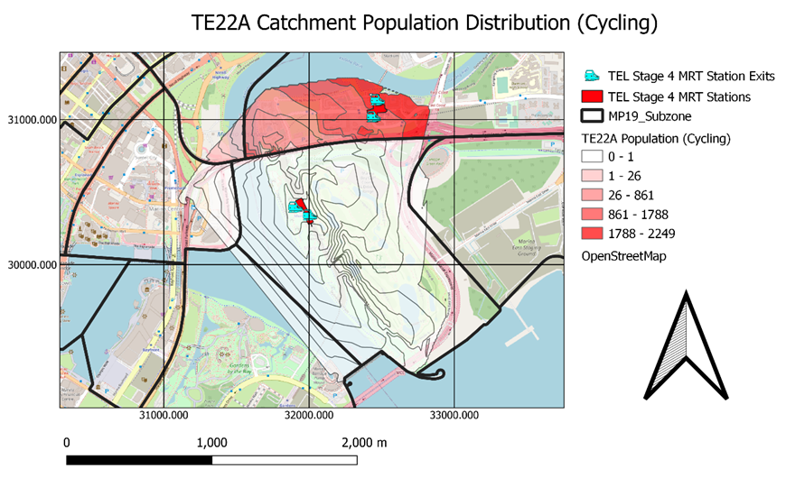
Based on the Cycling Catchment Population Distribution for TE22A Founders Memorial, we can see that the largest proportion of the catchment population falls within Tanjong Rhu. This is shown by the red contour layers. However, the largest subzone covered in this catchment area is Marina East. This is shown by the white contours covering almost Marina East fully.
We further broke down the population distribution per contour and subzone level below to visualize these numbers more clearly. Though these numbers are very large, the percentage of people who cycle is very low. As a result, these numbers do not reflect people who are willing to cycle to MRT but the distribution of catchment population within subzone areas.
Based on the layout and numbers generated, these following subzones [Marina East (86.5%), Marina South (9.7%), Nicoll (8.1%), Marina Centre (16.5%), Marina East (MP) (2.2%) and Tanjong Rhu (20.2%)] are captured at the 1600m mark. Additionally, it is noted that:
Marina South (9.7%) that is within the catchment area, covers water bodies mainly.
Despite 8% of Nicoll falling within the catchment area, this proportion of land coverage is even smaller if we want to eliminate the proportion of Nicoll that is made up of water bodies in the catchment area.
2.2% of Marina East (MP) falls within the cycling catchment area.
As a result, these three subzones are considered insignificant, thus we will eliminate them from the list of subzones.
Therefore, TE22A Founders Memorial is accessible from multiple subzones by cycling:
Marina East (86.5%)
Tanjong Rhu (20.2%)
Marina Centre (16.5%)
2.2. TE23 Tanjong Rhu
2.2.1. Catchment Population Distribution (Walking)
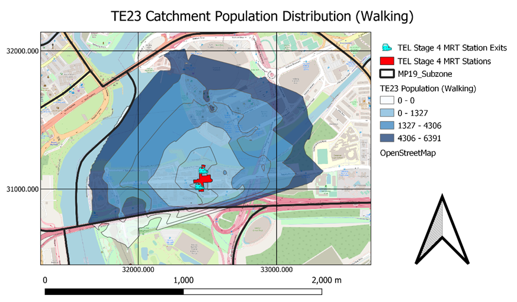
Based on the Walking Catchment Population Distribution for TE23 Tanjong Rhu, we can see that these following subzones (Marina East, Nicoll and Tanjong Rhu) are captured at the 1000m mark. However, we can see that the largest proportion of catchment population falls within Tanjong Rhu at the 200m mark onwards where all the residential areas lie. This is shown by the blue contour layers.
We further broke down the population distribution per contour and subzone level below to visualize these numbers more clearly. Additionally, we will be multiplying these numbers at every contour level by a ratio (as mentioned earlier) to accurately reflect how many people who are willing to walk to TE23 Tanjong Rhu (shown below).
Based on the numbers generated, the following breakdown are the Singaporeans who are willing to walk to TE23 Tanjong Rhu based on each contour interval:
335 Singaporeans within 200m contour
794 Singaporeans within 200-400m contour
613 Singaporeans within 400-600m contour
526 Singaporeans within 600-800m contour
313 Singaporeans within 800-1000m contour
6391 Singaporeans stay within the 1000m contour but only 2581 of them are willing to walk to TE23 Tanjong Rhu. The percentage of catchment population who is willing to walk to MRT Station over catchment population is 40.4%. This percentage does not reflect the number of Singaporeans who is willing to take public transportation but reflects the number of Singaporeans willing to walk to MRT station.
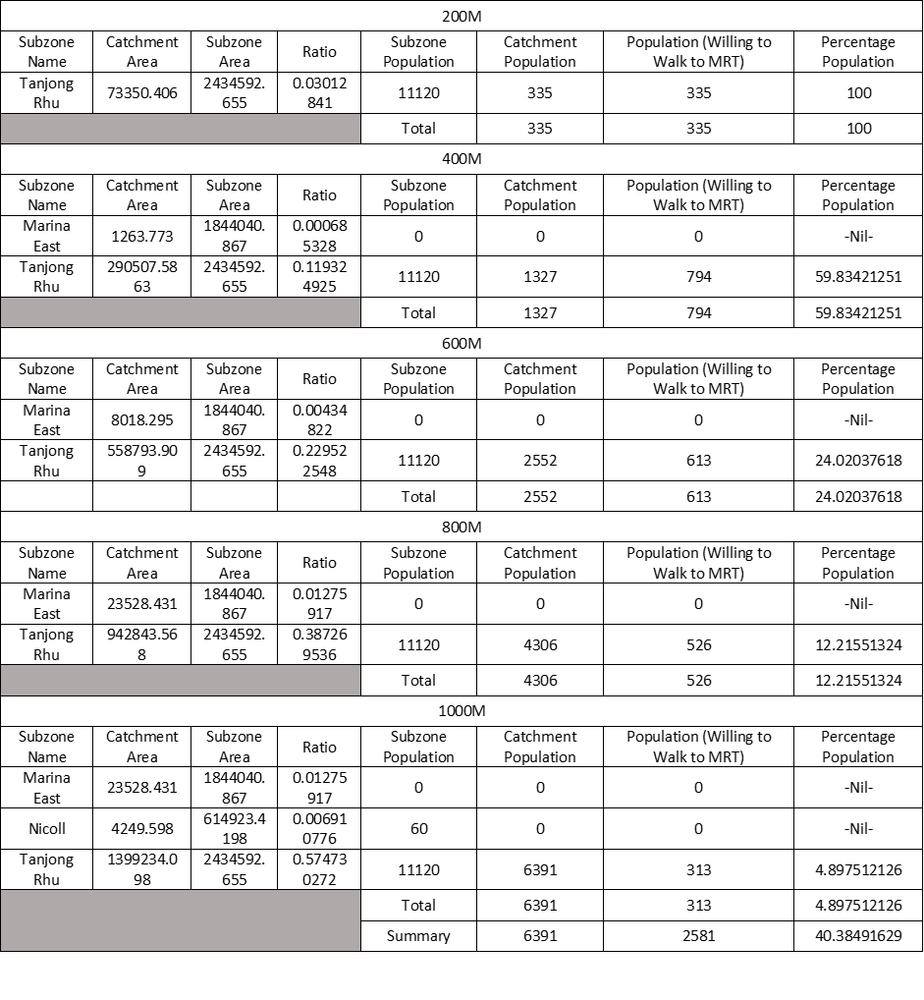
2.2.2. Catchment Population Distribution (Cycling)
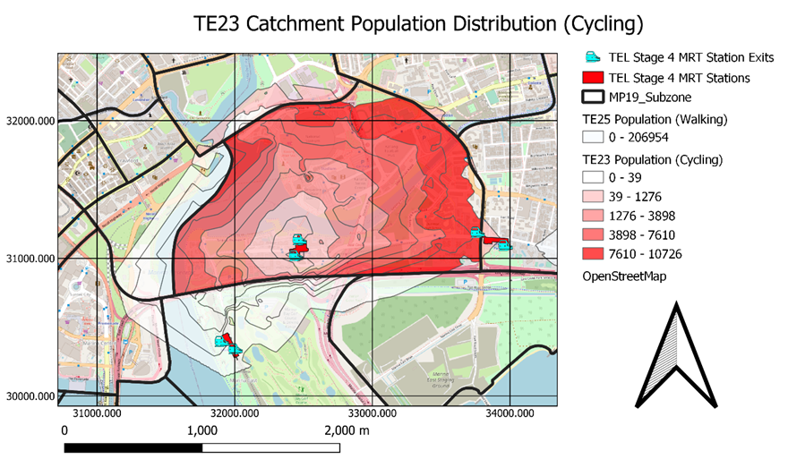
Based on the Cycling Catchment Population Distribution for TE23 Tanjong Rhu, we can see that the largest proportion of the catchment population still falls within Tanjong Rhu. This is shown by red contour layers. The largest subzone covered in this catchment area is also Tanjong Rhu. This is shown by the red contours covering Tanjong Rhu almost fully as well.
We further broke down the population distribution per contour and subzone level below to visualize these numbers more clearly. Though these numbers are very large, the percentage of people who cycle is very low. As a result, these numbers do not reflect people who are willing to cycle to MRT but the distribution of catchment population within subzone areas.
Based on the layout and numbers generated, these following subzones [Alijunied (0.4%), Kampong Bugis (17.9%), Marina Centre (7.3%), Marina East (31.3%), Marina East (MP) (6.5%), Mountbatten (1.5%), Nicoll (54.5%) and Tanjong Rhu (96.4)] are captured at the 1600m mark. Additionally, it is noted that:
Only 1.5% of Mountbatten falls within the catchment area
Only 0.4% of Alijunied falls within the catchment area
As a result, these two subzones are considered insignificant, thus we will eliminate Mountbatten and Alijunied from the list of subzones.
Therefore, TE22A Founders Memorial is accessible from multiple subzones by cycling:
Tanjong Rhu (96.4)
Nicoll (54.5%)
Marina East (31.3%)
Kampong Bugis (17.9%)
Marina Centre (7.3%)
Marina East (MP) (6.5%)
2.3. TE24 Katong Park
2.3.1. Catchment Population Distribution (Walking)
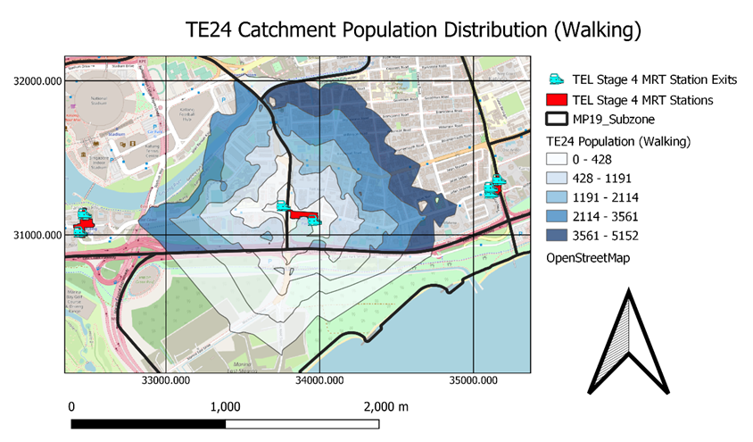
Based on the Walking Catchment Population Distribution for TE24 Katong Park, we can see that these following subzones (Aljunied, Marina East (MP), Mountbattenl and Tanjong Rhu) are captured at the 1000m mark. However, we can see that the largest proportion of catchment population falls within Mountbatten. This is shown by the darkest blue contour layer.
We further broke down the population distribution per contour and subzone level below to visualize these numbers more clearly. Additionally, we will be multiplying these numbers at every contour level by a ratio (as mentioned earlier) to accurately reflect how many people who are willing to walk to TE22A Founders Memorial (shown below).
Based on the numbers generated, the following breakdown are the Singaporeans who are willing to walk to TE24 Katong Park based on each contour interval:
396 Singaporeans within 200m contour
979 Singaporeans within 200-400m contour
818 Singaporeans within 400-600m contour
691 Singaporeans within 600-800m contour
413 Singaporeans within 800-1000m contour
8302 Singaporeans stays within the 1000m contour but only 3297 of them are willing to walk to TE24 Katong Park. The percentage of catchment population who is willing to walk to MRT Station over catchment population is 39.7%. This percentage does not reflect the number of Singaporeans who is willing to take public transportation but reflects the number of Singaporeans willing to walk to MRT station.
2.3.2. Catchment Population Distribution (Walking)
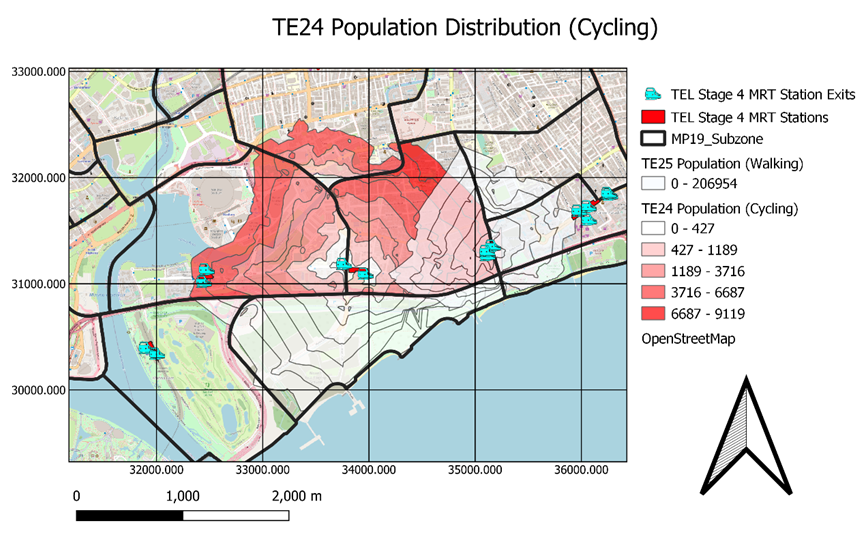
Based on the Cycling Catchment Population Distribution for TE24 Katong Park, we can see that the largest proportion of the catchment population falls within Mountbatten. This is shown by the darkest red contour. The largest subzone covered in this catchment area is also Mountbatten. This is shown by the largest contour covering almost Mountbatten fully as well.
We further broke down the population distribution per contour and subzone level below to visualize these numbers more clearly. Though these numbers are very large, the percentage of people who cycle is very low. As a result, these numbers do not reflect people who are willing to cycle to MRT but the distribution of catchment population within subzone areas.
Based on the layout and numbers generated, these following subzones [Alijunied (13.8%), East Coast (0.5%), Geylang East (0.1%), Katong (0.9%), Marina East (4.3%), Marina East (MP) (94.9%), Marine Parade (3.2%), Mountbatten (91.2%) and Tanjong Rhu (54.1%)] are captured at the 1600m mark. Additionally, it is noted that:
4.3% of Marina East falls within the catchment area
3.2% of Marine Parade falls within the catchment area
0.9% of Katong falls within the catchment area
0.5% of East Coast falls within the catchment area
0.1% of Geylang East falls within the catchment area
As a result, these five subzones are considered insignificant, thus we will eliminate them from the list of subzones.
Therefore, TE24 Katong Park is accessible from multiple subzones by cycling:
Marina East (MP) (94.9%)
Mountbatten (91.2%)
Tanjong Rhu (54.1%)
Alijunied (13.8%)
2.4. TE25 Tanjong Katong
2.4.1. Catchment Population Distribution (Walking)
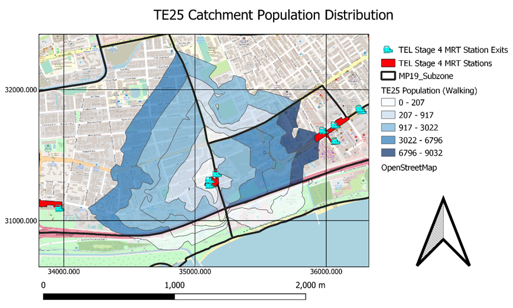
Based on the Walking Catchment Population Distribution for TE25 Tanjong Katong, we can see that these following subzones (East Coast, Katong, Marina East (MP), Marine Parade and Mountbatten) are captured at the 1000m mark. However, we can see that the largest proportion of catchment population falls within Marine Parade. This is shown by the darkest blue contour layers.
We further broke down the population distribution per contour and subzone level below to visualize these numbers more clearly. Additionally, we will be multiplying these numbers at every contour level by a ratio (as mentioned earlier) to accurately reflect how many people who are willing to walk to TE25 Tanjong Katong (shown below).
Based on the numbers generated, the following breakdown are the Singaporeans who are willing to walk to TE25 Tanjong Katong based on each contour interval:
617 Singaporeans within 200m contour
2444 Singaporeans within 200-400m contour
1680 Singaporeans within 400-600m contour
1111 Singaporeans within 600-800m contour
768 Singaporeans within 800-1000m
15857 Singaporeans stay within the 1000m contour but only 6620 of them are willing to walk to TE25 Tanjong Katong. The percentage of catchment population who is willing to walk to MRT Station over catchment population is 41.7%. This percentage does not reflect the number of Singaporeans who is willing to take public transportation but reflects the number of Singaporeans willing to walk to MRT station.
2.4.2. Catchment Population Distribution (Cycling)
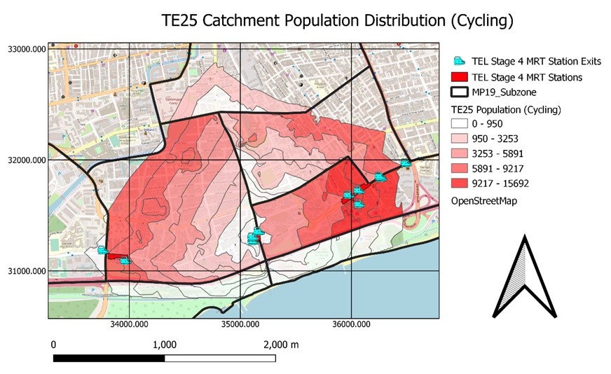
Based on the Cycling Catchment Population Distribution for TE25 Tanjong Katong, we can see that the largest proportion of the catchment population falls within Marine Parade. This is shown by the darkest red contour layer. However, the largest subzone covered in this catchment area is Mountbatten. This is shown by the largest contour covering almost Mountbatten fully.
We further broke down the population distribution per contour and subzone level below to visualize these numbers more clearly. Though these numbers are very large, the percentage of people who cycle is very low. As a result, these numbers do not reflect people who are willing to cycle to MRT but the distribution of catchment population within subzone areas.
Based on the layout and numbers generated, these following subzones [Alijunied (0.2%), East Coast (50.5%), Geylang East (10.8%), Katong (74.2%), Marina East (MP) (14.9%), Marine Parade (58.1%), Mountbatten (92.2%) and Tanjong Rhu (1.6%)] are captured at the 1600m mark. Additionally, you can highlight that:
1.6% of Tanjong Rhu falls within the catchment area
0.2% of Alijunied falls within the catchment area
As a result, these two subzones are considered insignificant, thus we will eliminate them from the list of subzones.
Therefore, TE25 Tanjong Katong is accessible from multiple subzones by cycling:
Mountbatten (92.2%)
Katong (74.2%)
Marine Parade (58.1%)
East Coast (50.5%)
Marina East (MP) (14.9%)
Geylang East (10.8%)
2.5 TE26 Marine Parade
2.5.1. Catchment Population Distribution (Walking)
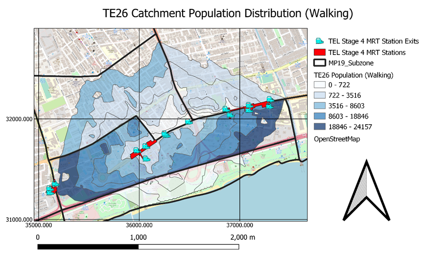
Based on the Walking Catchment Population Distribution for TE26 Marine Parade, we can see that these following subzones (East Coast, Frankel, Geylang East, Katong and Marine Parade) are captured at the 1000m mark. However, we can see that the largest proportion of catchment population falls within Marine Parade. This is shown by the darkest blue contour layers.
We further broke down the population distribution per contour and subzone level below to visualize these numbers more clearly. Additionally, we will be multiplying these numbers at every contour level by a ratio (as mentioned earlier) to accurately reflect how many people who are willing to walk to TE26 Marine Parade (shown below).
Based on the numbers generated, the following breakdown are the Singaporeans who are willing to walk to TE26 Marine Parade based on each contour interval:
2974 Singaporeans within 200m contour
5175 Singaporeans within 200-400m contour
3432 Singaporeans within 400-600m contour
2332 Singaporeans within 600-800m contour
1395 Singaporeans within 800-1000m contour
33379 Singaporeans stay within the 1000m contour but only 15308 of them are willing to walk to TE26 Marine Parade. The percentage of catchment population who is willing to walk to MRT Station over catchment population is 45.9%. This percentage does not reflect the number of Singaporeans who is willing to take public transportation but reflects the number of Singaporeans willing to walk to MRT station.
2.5.2. Catchment Population Distribution (Cycling)
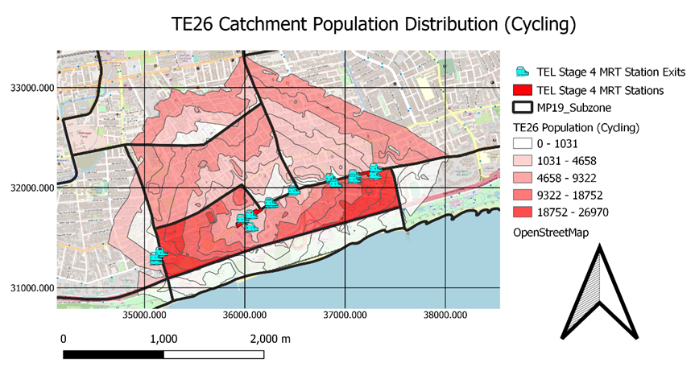
Based on the Cycling Catchment Population Distribution for TE26 Marine Parade, we can see that the largest proportion of the catchment population falls within Marine Parade. This is shown by the darkest red contour layer. However, the largest subzone covered in this catchment area is also Marine Parade. This is shown by the largest contour covering Marine Parade fully.
We further broke down the population distribution per contour and subzone level below to visualize these numbers more clearly. Though these numbers are very large, the percentage of people who cycle is very low. As a result, these numbers do not reflect people who are willing to cycle to MRT but the distribution of catchment population within subzone areas.
Based on the layout and numbers generated, these following subzones [Mountbatten (18,4%), Katong (98.4%), Marine Parade (100%), East Coast (96.8%), Marina East (2.7%), Frankel (26.9%), Geylang East (20.4%) and Siglap (15.7%)] are captured at the 1600m mark. Additionally, it is noted that:
- 2.7% of Marina East falls within the catchment area
As a result, this subzone is considered insignificant, thus we will eliminate it from the list of subzones.
Therefore, TE26 Marine Parade is accessible from multiple subzones by cycling:
- Marine Parade (100%)
- Katong (98.4%)
- East Coast (96.8%)
- Frankel (26.9%)
- Geylang East (20.4%)
- Mountbatten (18,4%)
- Siglap (15.7%)
2.6. TE27 Marine Terrace
2.6.1. Catchment Population Distribution (Walking)
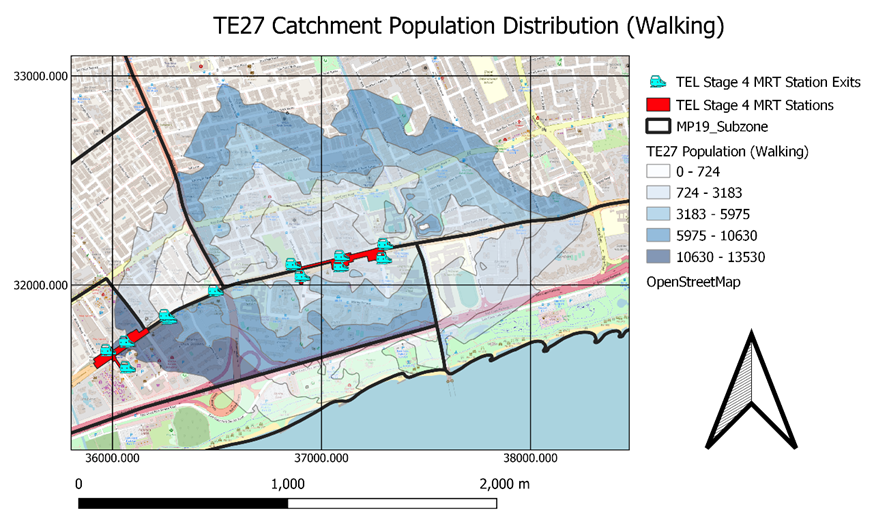
Based on the Walking Catchment Population Distribution for TE27 Marine Terrace, we can see that these following subzones (Katong, Marine Parade, East Coast, Frankel and Siglap) are captured at the 1000m mark. However, we can see that the largest proportion of catchment population falls within Marine Terrace. This is shown by the darkest blue contour layers.
We further broke down the population distribution per contour and subzone level below to visualize these numbers more clearly. Additionally, we will be multiplying these numbers at every contour level by a ratio (as mentioned earlier) to accurately reflect how many people who are willing to walk to TE27 Marine Terrace (shown below).
Based on the numbers generated, the following breakdown are the Singaporeans who are willing to walk to TE27 Marine Terrace based on each contour interval:
2359 Singaporeans within 200m contour
3968 Singaporeans within 200-400m contour
2601 Singaporeans within 400-600m contour
1633 Singaporeans within 600-800m contour
1097 Singaporeans within 800-1000m contour
25277 Singaporeans stay within the 1000m contour but only 11658 of them are willing to walk to TE27 Marine Terrace. The percentage of catchment population who is willing to walk to MRT Station over catchment population is 46.1%. This percentage does not reflect the number of Singaporeans who is willing to take public transportation but reflects the number of Singaporeans willing to walk to MRT station.
2.6.2. Catchment Population Distribution (Cycling)
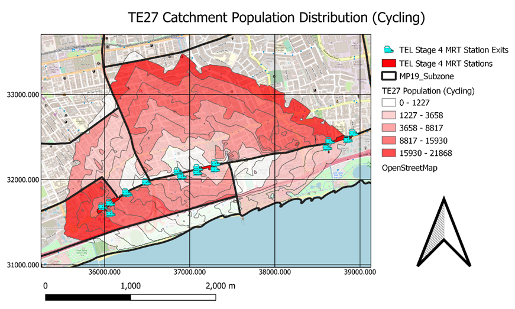
Based on the Cycling Catchment Population Distribution for TE27 Marine Terrace, we can see that the larger proportion of the catchment population falls within Marine Parade and Frankel. This is shown by the darkest red contour layers. However, the largest subzone covered in this catchment area is Frankel. This is shown by the largest contour covering Frankel.
We further broke down the population distribution per contour and subzone level below to visualize these numbers more clearly. Though these numbers are very large, the percentage of people who cycle is very low. As a result, these numbers do not reflect people who are willing to cycle to MRT but the distribution of catchment population within subzone areas.
Based on the layout and numbers generated, these following subzones [Marine Parade (81.1%), Frankel (55.2%), Siglap (55.6%), Geylang East (2.1%), Katong (53.6%), Kembangan (0.9%) and East Coast (63.6%)] are captured at the 1600m mark. Additionally, it is noted that:
2.1% of Geylang East falls within the catchment area
0.9% of Kembangan falls within the catchment area
As a result, these subzones are considered insignificant, thus we will eliminate them from the list of subzones.
Therefore, TE27 Marine Terrace is accessible from multiple subzones by cycling:
Marine Parade (81.1%)
East Coast (63.6%)
Siglap (55.6%)
Frankel (55.2%)
Katong (53.6%)
2.7. TE28 Siglap
2.7.1. Catchment Population Distribution (Walking)
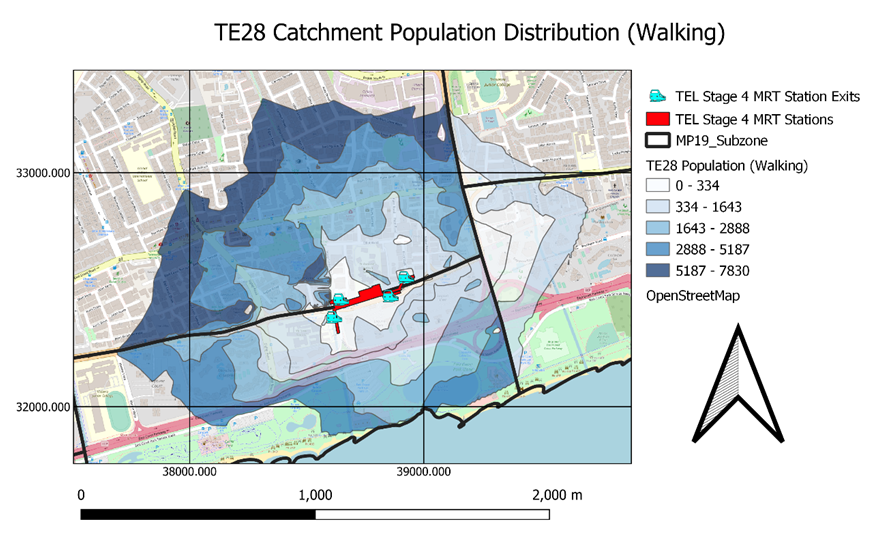
Based on the Walking Catchment Population Distribution for TE28 Siglap, we can see that these following subzones (Siglap, Frankel, Bayshore and Bedok South) are captured at the 1000m mark. However, we can see that the largest proportion of catchment population falls within Frankel. This is shown by the darkest blue contour layer.
We further broke down the population distribution per contour and subzone level below to visualize these numbers more clearly. Additionally, we will be multiplying these numbers at every contour level by a ratio (as mentioned earlier) to accurately reflect how many people who are willing to walk to TE28 Siglap (shown below).
Based on the numbers generated, the following breakdown are the Singaporeans who are willing to walk to TE28 Siglap based on each contour interval:
573 Singaporeans within 200m contour
1281 Singaporeans within 200-400m contour
1182 Singaporeans within 400-600m contour
1192 Singaporeans within 600-800m contour
4982 Singaporeans within 800-1000m contour
13544 Singaporeans stay within the 1000m contour but only 4982 of them are willing to walk to TE28 Siglap. The percentage of catchment population who is willing to walk to MRT Station over catchment population is 36.8%. This percentage does not reflect the number of Singaporeans who is willing to take public transportation but reflects the number of Singaporeans willing to walk to MRT station.
2.7.2. Catchment Population Distribution (Cycling)
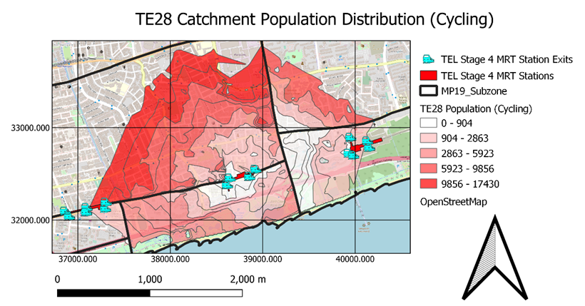
Based on the Cycling Catchment Population Distribution for TE28 Siglap, we can see that the largest proportion of the catchment population falls within Frankel. This is shown by the darkest red contour layers. The largest subzone covered in this catchment area is also Frankel. This is shown by the largest contour covering Frankel.
We further broke down the population distribution per contour and subzone level below to visualize these numbers more clearly. Though these numbers are very large, the percentage of people who cycle is very low. As a result, these numbers do not reflect people who are willing to cycle to MRT but the distribution of catchment population within subzone areas.
Based on the layout and numbers generated, these following subzones [Siglap (90.0%), Frankel (50.4%), Bayshore (24.5%), Bedok South (16.8%), Marine Parade (7.0%) and East Coast (0.5%)] are captured at the 1600m mark. Additionally, it is noted that:
- 0.5% of East Coast falls within the catchment area
As a result, this subzone is considered insignificant, thus we will eliminate it from the list of subzones.
Therefore, TE28 Siglap is accessible from multiple subzones by cycling:
Siglap (90.0%)
Frankel (50.4%)
Bayshore (24.5%)
Bedok South (16.8%)
Marine Parade (7.0%)
2.8. TE29 Bayshore
2.8.1. Catchment Population Distribution (Walking)
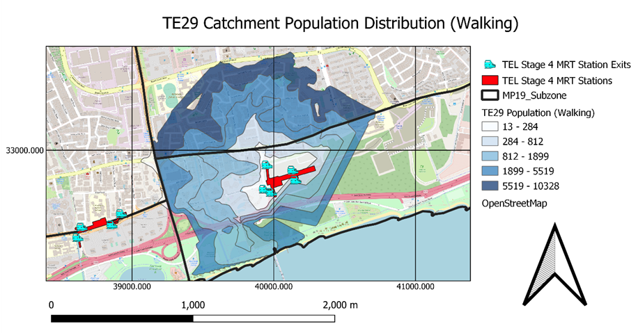
Based on the Walking Catchment Population Distribution for TE29 Bayshore, we can see that these following subzones (Bayshore, Bedok South, Frankel, Siglap) are captured at the 1000m mark. However, we can see that the largest proportion of catchment population falls within Bedok South. This is shown by the darkest blue contour layer.
We further broke down the population distribution per contour and subzone level below to visualize these numbers more clearly. Additionally, we will be multiplying these numbers at every contour level by a ratio (as mentioned earlier) to accurately reflect how many people who are willing to walk to TE29 Bayshore (shown below).
Based on the numbers generated, the following breakdown are the Singaporeans who are willing to walk to TE29 Bayshore based on each contour interval:
317 Singaporeans within 200m contour
957 Singaporeans within 200-400m contour
1013 Singaporeans within 400-600m contour
1164 Singaporeans within 600-800m contour
838 Singaporeans within 800-1000m contour
13004 Singaporeans stay within the 1000m contour but only 4289 of them are willing to walk to TE29 Bayshore. The percentage of catchment population who is willing to walk to MRT Station over catchment population is 33.0%. This percentage does not reflect the number of Singaporeans who is willing to take public transportation but reflects the number of Singaporeans willing to walk to MRT station.
2.8.2. Catchment Population Distribution (Cycling)
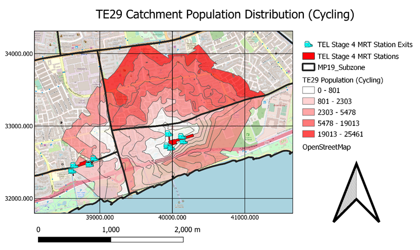
Based on the Cycling Catchment Population Distribution for TE29 Bayshore, we can see that the largest proportion of the catchment population falls within Bedok South. This is shown by the darkest red contour layer. The largest subzone covered in this catchment area is also Bedok South. This is shown by the largest contour covering Bedok South.
We further broke down the population distribution per contour and subzone level below to visualize these numbers more clearly. Though these numbers are very large, the percentage of people who cycle is very low. As a result, these numbers do not reflect people who are willing to cycle to MRT but the distribution of catchment population within subzone areas.
Based on the layout and numbers generated, these following subzones [Bayshore (51.9%), Bedok South (54.4%), Frankel (10.3%) and Siglap (26.5%)] are captured at the 1600m mark.
Since there are no insignificant subzones, TE28 Siglap is accessible from multiple subzones by cycling:
Bedok South (54.4%)
Bayshore (51.9%)
Siglap (26.5%)
Frankel (10.3%)
3. Lessons Learnt
3.1 Conclusion of Walking Population Analysis
The percentage of the catchment population who is willing to walk from maximum Iso Area Distance of 1000m from all TEL Stage 4 MRT Stations mainly falls within 33.0% to 46.1% with an outlier of 23.3% for TE22A Founders Memorial. The ranking of effectiveness of MRT Station in capturing Singaporeans to walk to MRT Stations goes as follows:
TE27 Marine Terrace 46.1%
TE26 Marine Parade 45.9%
TE25 Tanjong Katong 41.7%
TE23 Tanjong Rhu 40.4%
TE24 Katong Park 39.7%
TE28 Siglap 36.8%
TE29 Bayshore 33.0%
TE22A Founders Memorial 23.3%
Percentage for Founders Memorial is low due to the MRT being built nearer towards recreational land uses such as East Coast Park Zone A and Marina Bay Golf Course. Therefore, it mainly provides leisure Singaporeans and tourists greater access to nature reserves and recreational venues. As a result, it explains its low percentage. This does not mean that the location of this MRT Station is not ideal but it is effective in aiding Singaporeans in their last mile journeys by increasing accessibility to remote areas of Singapore.
Percentages for Marine Terrace and Marine Parade are extremely high as compared to the rest due to the MRT Stations being built at locations with high proportions of residential areas, which explains the high subzone populations as well. Therefore, locations of these two MRT Stations are extremely ideal as they are effective in aiding Singaporeans in their first mile journeys by increasing accessibility to them.
3.2 Conclusion of Cycling Population Analysis
The number of subzones captured from maximum Iso Area Distance of 1600m falls within 3 to 7 with TE22A Founders Memorial being the least accessible. The ranking of effectiveness of MRT Station in capturing Singaporeans to cycle to MRT Stations goes as follows:
TE26 Marine Parade 7
TE25 Tanjong Katong 6
TE23 Tanjong Rhu 6
TE27 Marine Terrace 5
TE28 Siglap 5
TE24 Katong Park 4
TE29 Bayshore 4
TE22A Founders Memorial 3
TE22A Founders Memorial managed to capture the least subzones due to its low accessibility as a result of it being surrounded by water bodies. Though it initially captured 6 different subzones, 3 of them are not accessible if the maximum distance travelled based on the existing road network is 1600m. Therefore, TE22A Founders Memorial is the least accessible if Singaporeans want to cycle to it as well.
TE26 Marine Parade managed to capture the most subzone due to its size of MRT Station. Being the largest MRT Station with its exits being most distributed across the MRT Station, its accessibility is maximised as it was able to branch out extensively to more subzones. Therefore, TE26 Marine Parade is the most accessible if Singaporeans want to cycle to it.
TE25 Tanjong Katong is ranked higher than TE23 Tanjong Rhu as total catchment area for TE25 Tanjong Katong (3868708.0m2) is higher than that of TE23 Tanjong Rhu (3562429.2m2). Therefore, TE25 Tanjong Katong is more accessible than TE23 Tanjong Rhu based on existing road networks for both MRT Stations.
Similarly for TE24 Katong Park and TE29 Bayshore, total catchment area for TE24 Katong Park (4797523.0m2) is higher than that of TE29 Bayshore (3689993.5m2). Therefore, TE24 Katong Park is more accessible than TE29 Bayshore based on existing road networks for both MRT Stations, TE24 Katong Park will rank higher than TE29 Bayshore.